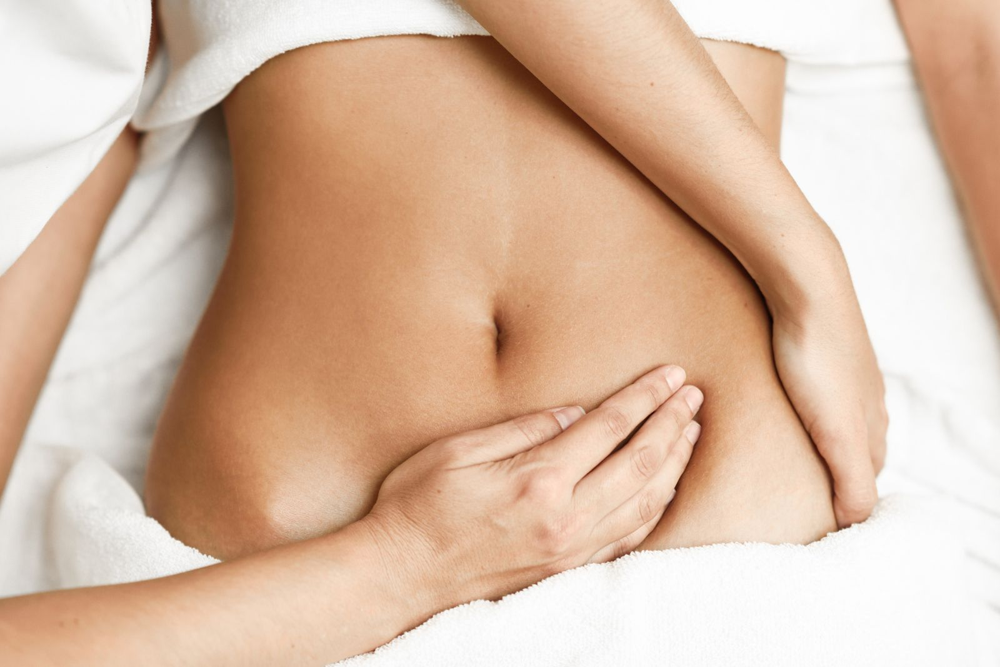
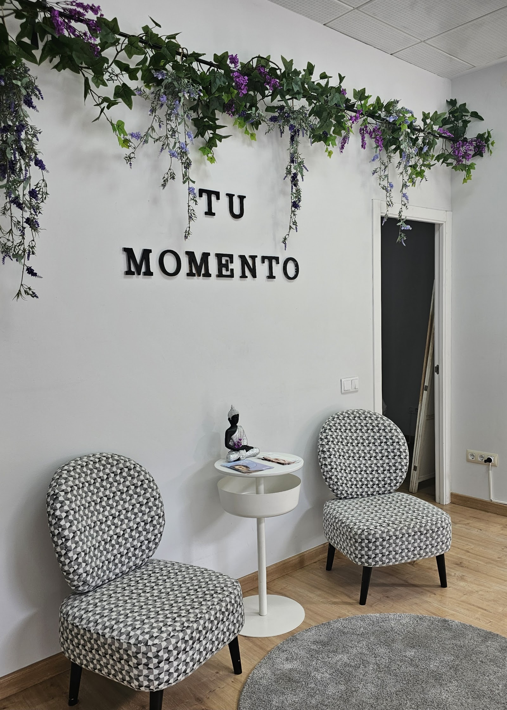
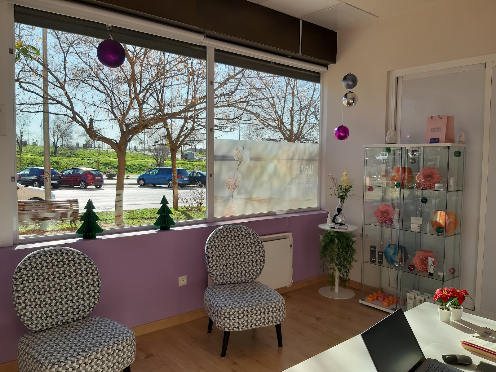
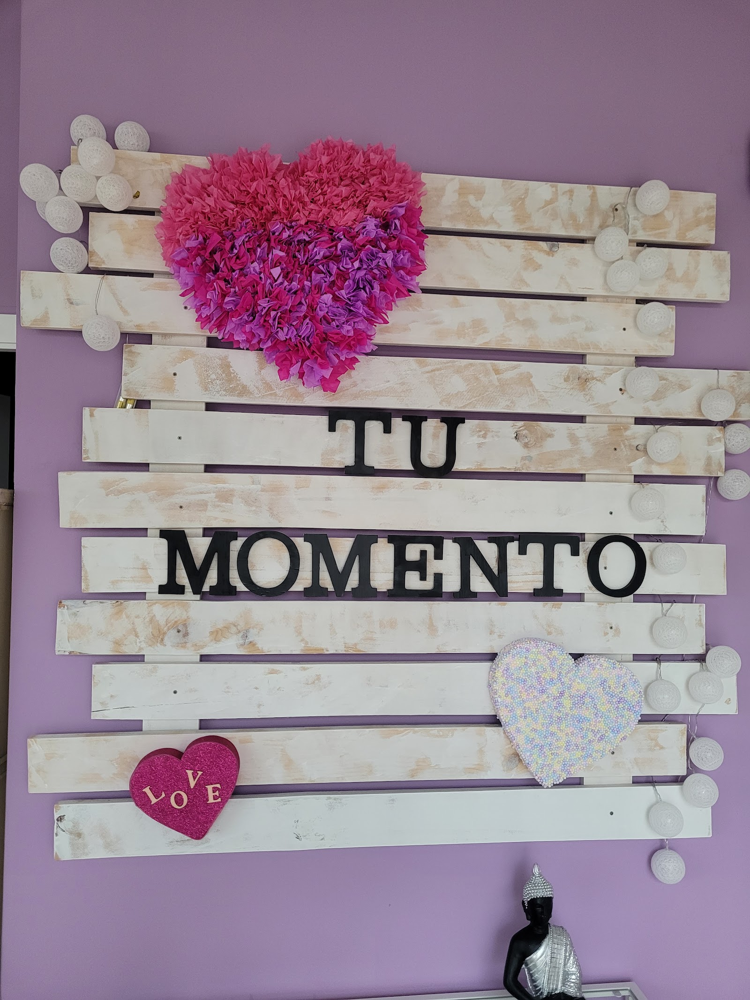
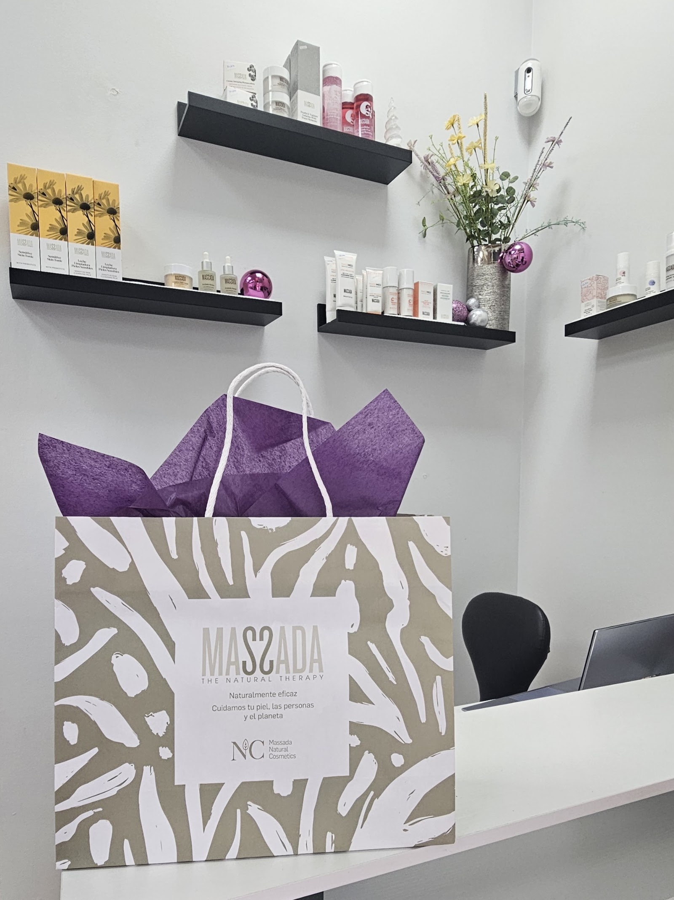
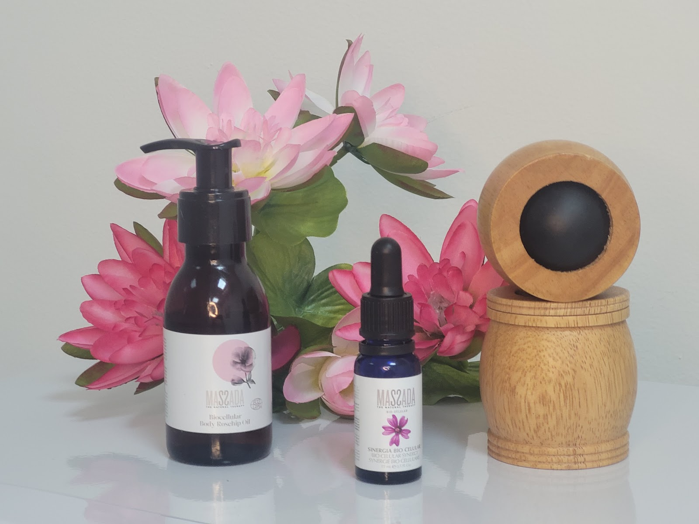
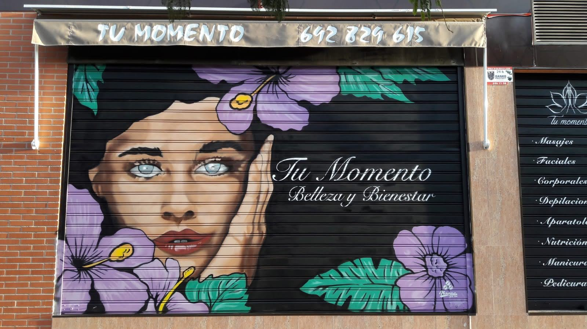

Especialistas en Well Aging, Remodelación Corporal y Bienestar Real
★★★★★4,9 · 445 reseñas en Google“Donde tu historia y tu piel se encuentran”
Tu Momento nació con una misión clara: ser ese refugio donde te sientas escuchada y comprendida. Aquí no creemos en soluciones genéricas. Sabemos que cada rostro y cada cuerpo tienen sus propias necesidades, y por eso hemos diseñado un espacio donde tu bienestar es el único protagonista.
Pero no estoy sola. Me acompaña un equipo de profesionales altamente cualificadas, mujeres formadas y comprometidas que comparten mi misma filosofía: la excelencia en el detalle.
“No se trata solo de cuidar tu piel, se trata de entender tu historia”.
Nuestros puntos fuertes son los pilares de tu transformación:
Aquí no vas a encontrar una lista de máquinas, vas a encontrar soluciones. Porque en Tu Momento, lo más importante eres tú. Y nuestro mayor orgullo es el resultado que tú sientes.
Una sinergia perfecta entre precisión y sensibilidad.
En un sector que ha sustituido el criterio profesional por el uso indiscriminado de máquinas, en Tu Momento reivindicamos el poder de la capacidad técnica.
Nuestra metodología no es un protocolo cerrado, es un proceso vivo; una sinergia del cuidado. KAI Essence nace de la convicción de que la verdadera transformación ocurre cuando tratamos el cuerpo y el rostro con la precisión de un ingeniero y la sensibilidad de un artista.
Aquí, cada sesión es única. No nos limitamos a aplicar tecnología; la entendemos como una herramienta, pero nuestras manos son el motor del cambio. Utilizamos la maestría manual para despertar la regeneración profunda de tus tejidos, apoyándonos en la biotecnología botánica más avanzada que respeta y potencia tu propia biología.
La diferencia son nuestras manos, nuestro compromiso es tu resultado.
El arte de escuchar antes de actuar.
Todo cambio real, profundo y duradero comienza con una conversación honesta y una escucha activa. En Tu Momento, la valoración no es un simple trámite; es el alma de nuestra metodología KAI Essence.
No tratamos pieles de forma genérica, ni aplicamos protocolos estandarizados. Tratamos personas con historias, hábitos y necesidades únicas. Por eso, unimos la precisión de la tecnología avanzada con la sabiduría milenaria de la Ayurveda: leemos tus biotipos (doshas) y analizamos en profundidad tu tejido para identificar el origen real de lo que te preocupa.
Entender tu historia biológica y energética es el único camino para diseñar una estrategia a medida, un proceso guiado que garantiza la excelencia y resultados reales, coherentes y sostenibles en el tiempo.
Porque cuando comprendemos el origen, transformamos el resultado.
La potencia de la ciencia en armonía con tu biología.
Creemos firmemente en una belleza que respeta el equilibrio natural de tu cuerpo. Por eso, hemos seleccionado activos de alta pureza y vanguardia científica que actúan en perfecta sinergia contigo.
Nuestra biotecnología no es invasiva; es inteligente. Utilizamos fórmulas de alta asimilación que penetran en las capas más profundas para despertar la regeneración celular desde el interior. El resultado es una transformación visible y potente, pero siempre saludable y respetuosa con tu propia naturaleza.
Ciencia y botánica unidas para una belleza real y consciente.

Donde la tecnología no llega, llegan nuestras manos.
Reivindicamos el valor de la técnica manual como la herramienta más sofisticada y precisa que existe. En Tu Momento, entendemos que el motor real del cambio no es un dispositivo, sino la maestría de quien lo dirige.
Cada sesión es única. A través de movimientos expertos, rítmicos y conscientes, nuestras manos esculpen la silueta, drenan los tejidos y liberan las tensiones profundas que bloquean tu belleza.
Es aquí, en el contacto directo, donde la ciencia se convierte en arte para garantizar resultados que no solo son visibles, sino que permanecen en el tiempo.
Nuestra diferencia son nuestras manos. Nuestro compromiso es tu resultado.
Cada tratamiento empieza con tu valoración. Escríbenos y te contamos cuál es el tuyo.
Cuidado facial avanzado para recuperar la juventud sin perder la naturalidad.
Ver los 8 tratamientosPedir informaciónRemodelación corporal: un enfoque de precisión para esculpir el cuerpo.
Ver los 6 tratamientosPedir informaciónBienestar real: el refugio para desconectar del ruido exterior. También en cabina para dos.
Pedir informaciónLeemos tus biotipos (doshas) para entender el origen real de lo que te preocupa.
Pedir informaciónAsí es nuestro centro de la calle Barcelona, en Móstoles.






4,9 de 5 estrellas · 445 reseñas
“Me realicé una limpieza facial oxigenante y fue todo un acierto. Salí con la piel luminosa, limpia y súper relajada. ¡Gracias por hacer honor a vuestro nombre!”
Gema M.“Hoy he ido a hacerme un tratamiento Detox corporal, ha sido una pasada. Irene ha sido un amor, explicándome todo. Y Laura por su franqueza en lo que me conviene hacer.”
Marta D.“He venido a darme un masaje relajante en una cabina para dos personas. El sitio está súper limpio, muy bien ambientado y súper tranquilo.”
María S.Todo empieza con una conversación. Escríbenos y te buscamos hueco.
Pide tu valoraciónC. Barcelona, 37, posterior 1, planta local 2C2
28937 Móstoles, Madrid